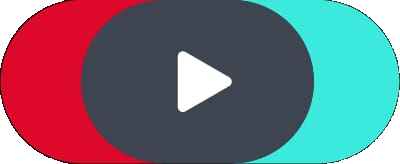

Steh hinter dem HV-Tisch. Berate echte Kundentypen. Werde vom Praktikanten zur Apotheken-Legende.
Jeder Kunde ist anders. Jede Beratung zählt.
Stark gemeistert! Sichere deinen Fortschritt und erhalte dein Zertifikat.